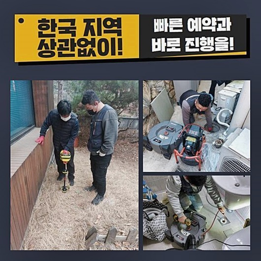
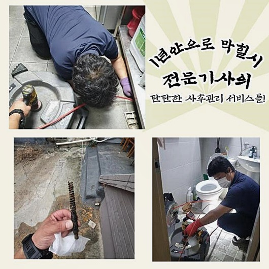
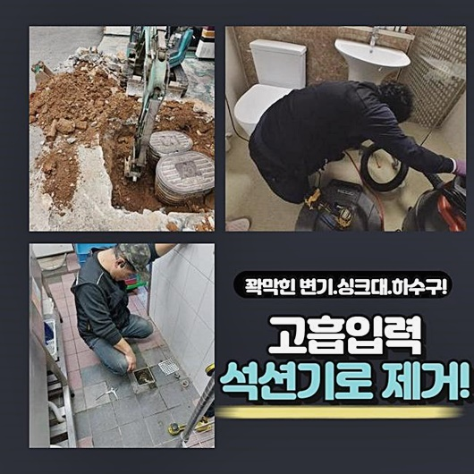
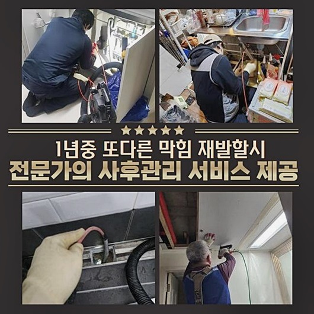
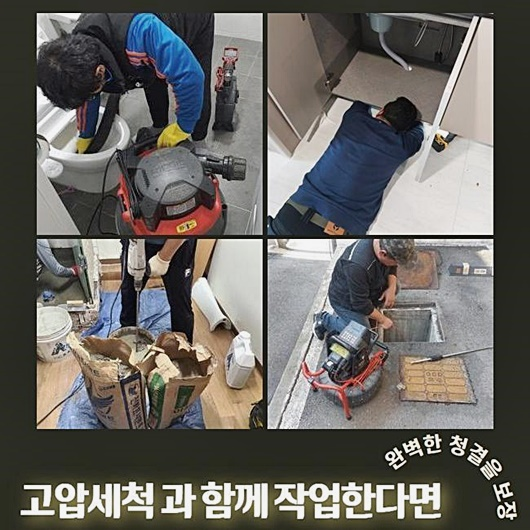
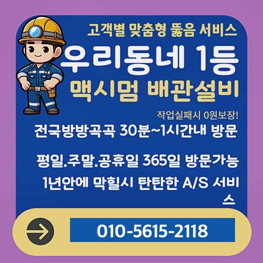

🏠 마포 마포동변기뚫음 서강동 하수구뚫는곳 누수
용인시 처인구 배관막힘 전문 시공 후기

📋 작업 개요
- 위치: 용인시 처인구, 수원시 영통구, 화성시 동탄
- 서비스 유형: 배관막힘, 누수수리, 고압세척, 내시경점검
- 작업 일시:
- 업체명: 하수구수사대 (010-5615-2118)
🔍 문제 상황
마포 마포동변기뚫음 서강동 하수구뚫는곳 누수
급작스레 배관에서 차단이 일어난 사안이 존재하셨을 것이라 예측합니다
어느 순간 욕실 배수관이 역류를 하는 바람에 배관 통수진행을 진행해 보셨던 사실도 고객님의 삶 속에서 있었을 가능성이 높은데요
배수관으로 머리카락 등이 투입되면 초창기에는 무방하겠지만 계속적으로 적층된다면 정체가 일어나게 되는거죠
화장실을 쓸 수 없는 상황이 되면 불편함의 수준이 부풀어질 수밖에 없답니다
차단이 생겨난 파이프를 처치해 보려고 긴 플라스틱도 넣어보고 여러 약제 등도 적용해 보았는데 뚫어내지 못했다면 배수구 처치를 도맡는 사람에게 신속하게 문의하여 수리받으실 것을 권해드립니다
방치는 도리어 상황을 나빠지게 할 수 있다는 점 등을 지나치시면 추후 더욱 고생할 수 있어요
이번 글에선 배수구 세정작업과 관계된 이야기와 갑자기 정체된 형편에서 신속히 처리하는 방책을 선보여 드리겠습니다
요번에 방문한 현장처럼 막힘으로 난해한 상태라면 한층 정밀한 조치가 불가결하답니다
말씀드릴 내용은 의뢰인의 시급한 요구에 부응하여 즉각 내방하였던 데입니다
사무실의 바깥쪽에 있는 하수구가 차단되어 본업무에 난관이 생겨버렸어요
현장에 가보니 관이 깊었고 막힌 곳이 상당히 멀었어요 해결이 쉬이 이루어지지 않을 거라는 걸 예상하였어요
즉각적인 도움을 드려야 하였기에 중간 지점의 배관을 굴착하기로 했어요

🔎 원인 분석
💡 전문가 진단: 정밀 진단 장비를 사용하여 슬러지의 고착 여부를 판명하고 타격/세척 작업을 실시했습니다.
물빠짐이 하나도 이행되지 않아 안을 들여다볼 수 없는 사태였어요
이로인해 면밀한 상태 확인이 난해하므로 내시경cctv를 통하여 내측을 상황을 간파하기로 하였답니다
내측에 잔재가 상당하였는데요 정체는 바로 기름때였어요
건물관리자께서 세척 용액을 써보기도 했지만 변화는 없었다 하시더라고요 배수시스템이 가동될 수 없게끔 노폐물 덩어리들이 점령하고 있었죠
내시경cctv를 통하여 좀더 면밀하게 들여다보니 맨홀부근에서 시관로에까지 연결된 부근이 막혀버리는 바람에 물이 넘쳐흘렀던 것입니다
예측보다 큰 범위에서 굳어진 노폐물들로 차 있었어요
다양한 제품을 가공하면서 흘러나온 기름때로 인한 잔재들이 상당히 많아 보였답니다
의뢰자께 중앙부근의 파이프를 절제하는 것이 알맞겠다고 안내하고 구체적인 내용을 안내 후 업무에 들어갔답니다
업무 진행에 관한 동의를 얻고 실내에 존재하는 하수관에서부터 밖의 시관로를 소제하였어요
막힌 범위가 넓어서 선제적인 작업을 마친 후엔 주변에 연계된 배수관도 도구를 사용해서 세정하여야 됩니다
이 경우엔 고속분쇄용기기를 써주면 됩니다 이 기계는 머릿부분의 쇠사슬이 회전해나가며 안에 체류하는 노폐물을 깎아내는 노릇을 하고 있어요
간간이 의뢰자께서 고속회전하면서 파이프에 문제가 생기지 않을까 우려하시는 경우도 있으신데요
사용법을 숙지하지 못한 담당자가 주먹구구식으로 가동한다면 그러한 상황이 생겨날 수 있겠으나 저희처럼 숙련성을 갖춘 이들에겐 부합하지 않다는 것을 알려드립니다
배수관카메라를 통하여 내부 상황을 들여다보면서 이물들이 가득찬 부위와 이유를 분석하고 본작업에 들어갑니다

🔧 작업 과정
일터에서 배출되는 오수에 함유된 찌꺼기들이 가뜩이 차 있는 상태였어요
플렉스샤프트 장비를 통해 쓰레기들을 없애나가는 걸 보시곤 정말 만족스럽다고 좋아하시더라고요
긴 구간이었으나 굴토한 부분을 기초로 해서 꼼꼼히 세정을 실시했답니다
제조시설이 있는 처소에선 기름을 쓸 수밖에 없으며 다양한 변수에 근거해서 슬러지가 뭉치기에 엄격한 시스템으로 운영된다고 해도 말썽이 일어날 수 있는 것입니다
말끔한 모습으로 현장이 바뀌자 차후 신경써서 사용해야 하겠다며 부르길 잘 했다고 하셨어요
시설 안에서 물이용을 할 수 없는 모습이 된 건 야외에 매립되어 있는 배관쪽에서 막힘이 발발하였기 때문이예요
이러한 문제가 생겨나 버린다면 직원에게도 영양을 주게 됩니다 여러 노폐물들이 맨눈으로 보이는 수준으로 상당량 누증되어 있었어요
1년 정도는 세정과 관련한 업무를 하지 않았다 이야기해 주셨어요
그래서 배수구를 통해 다양한 성분이 더해졌다는 걸 알아챌 수 있었어요
공장의 설비가 노후되었기 때문에 배관 또한 낡아졌을 가망성이 높습니다
이러한 사항도 배관막힘이 일어났을 경우에 심각해질 수가 있으니 주의가 필요합니다
잔재들이 점층적으로 누적되면 물의 흐름을 방해하게 되어 배수관 시설에도 하중을 가하고 부식이 생겼었던 지점에서는 물이 새나갈 수도 있어요
정체되었던 물질들은 플렉스샤프트를 통해서 충분하게 처리할 수 있었으므로 부가적인 고압세정은 이행할 필요가 없었어요
플렉스샤프트를 기반으로 기름슬러지를 말끔하게 없내는 일을 실행했죠
일상적으로 배관클리닝이 안 되었다면 쉽게 막혀버릴 수 있고 물이 넘칠수도 있어요
신속하게 배수공의 수분이 빠져나가지 못하고 평시와 이질감이 느껴진다고 하면 최대한 빠르게 관련업자에게 연락을 취하시는 것이 나아요
막혀버린 자리는 다른곳에 비교해서 상황이 비경해질 가망성이 커요
재빠른 방문과 수리도 중요하지만 숙달된 전문인을 수소문하는 것 역시 불가결합니다
제반시설은 충분한지와 실력 등을 사전에 살펴보는 게 좋아요
충분한 경력과 제반설비 이 두가지를 충족한다면 힘겨운 상황이 펼쳐졌더라도 능히 해낼 수가 있답니다
저희팀은 통수업무가 원활히 이행될 수 있게끔 최신 기기들을 갖추고 있습니다
현장상황에 최적합한 전문적 기기를 이용할 수 있게끔 플렉스샤프트와 고압청소 장비 일체를 맞춘 다음에 공사현장으로 이동하고 있어요


✅ 작업 완료
슬러지들을 떠미는 방안으로 일을 속행하고 내시경촬영기기를 투입시켜 내측에 이물들이 체류하고 있는지도 관찰하며 꼼꼼히 소제해나가고 있어요
이러한 수순으로 공사를 받게 된다면 이물이 쉽게 안쌓여서 재막힘이 일어나는 부분은 근심하지 않아도 됩니다
각종 이물질 덩어리와 기름때가 사라지게 되었답니다
꼭 막힘이 발생하지 않았다 해도 사전에 방예하는 시공을 신청할 수 있습니다
예약하신 시간에 늦지 않게 내방해 드리며 이른 아침에도 근무하고 있으니 고심하지 말고 문의해 주세요
방관시하지 마시고 이상증세가 포착되면 곧바로 대응하는 것을 권유해 드립니다



⚠️ 하수구 배관 막힘 예방 및 관리 가이드
- ✅ 머리카락, 비닐, 물티슈 등 물에 분해되지 않는 이물질은 절대 흘려보내지 마세요.
- ✅ 기름기 많은 식기는 설거지 전 키친타올로 먼저 기름때를 닦아내세요.
- ✅ 주기적으로 배수구에 뜨거운 물을 가득 부어주어 유지방 고착을 방지하세요.
- ✅ 작업 후 1년 이내 재발 시 무상 A/S 보증 서비스를 제공합니다.
💡 핵심 정리
- 확실한 장비 작업(내시경 점검 및 샤프트 스케일링)으로 원인을 뿌리 뽑습니다.
- 작업 후 1년 이내에 동일한 부위 재발 시 100% 무상 A/S 서비스를 보장합니다.
- 서울 · 경기 · 인천 전 지역에 24시간 언제든 긴급 출동할 수 있도록 항시 대기 중입니다.
❓ 자주 묻는 질문 (FAQ)
🚨 용인시 처인구 배관막힘 문제로 고민이신가요?
정확한 원인 진단과 확실한 시공으로 재발 없는 해결을 약속드립니다.
24시간 긴급 출동 | 서울 · 경기 · 인천 전지역 | 1년 내 재발 시 무상 A/S